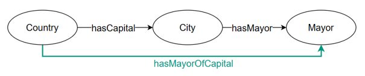
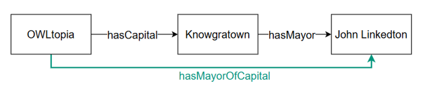

CHASH
Transformation Pattern
Contractive
Description
CHASH stands for CHain of properties SHortcut. It provides a direct semantic mapping for shortcutting complex property chains within knowledge graphs or ontologies.
Pattern Visual Diagram TBox

Figure 1: Diagram showing the property chain shortcut at TBox level.
Pattern Visual Diagram ABox

Figure 2: Diagram showing the property chain shortcut at ABox level.
Usage
- Reduction of number of atoms in relational learning (rules that could not have been discovered in the full representation due to search space limitations can be discovered in the compacted representation)
- More compact visualization
- When we do not want to share trade secrets.
SPARQL Transformation
Input
SELECT ?A ?p ?B ?r ?C
WHERE {
?p rdfs:domain ?A .
?p rdfs:range ?B .
?r rdfs:domain ?B .
?r rdfs:range ?C . }Output
INSERT DATA {
<newProperty< a owl:ObjectProperty ;
rdfs:domain <A> ;
rdfs:range <C> . }